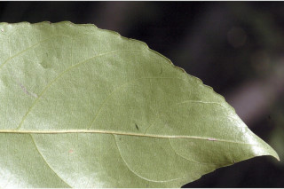
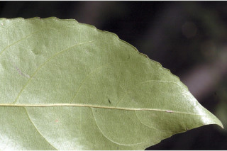
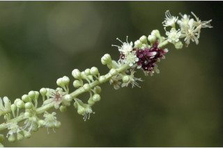
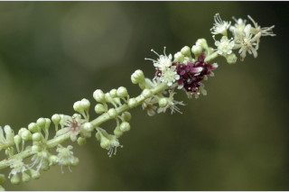

Trees up to 25 m tall.
25 ಮೀ. ಎತ್ತರದವರೆಗೆ ಬೆಳೆಯುವ ಮರಗಳು.
25 മീറ്റര് വരെ ഉയരമുളള മരങ്ങള്.
மரங்கள், 25 மீ. உயரம் வரை வளரக்கூடியது
Bark smooth, grey; blaze white with orange speckles.
ತೊಗಟೆ ನಯವಾಗಿದ್ದು ಬೂದು ಬಣ್ಣ ಹೊಂದಿರುತ್ತದೆ;ಕಚ್ಚು ಮಾಡಿದ ಜಾಗ ಕಿತ್ತಳೆ ಬಣ್ಣದ ಸಣ್ಣ ಮಚ್ಚೆಗಳ ಸಮೇತವಿರುವ ಬಿಳಿ ಬಣ್ಣ ಹೊಂದಿರುತ್ತದೆ.
മിനുസമാര്ന്ന, ചാര നിറത്തിലുളള പുറംതൊലി; വെട്ടുപാടിന് ഓറഞ്ച് നിറത്തിലുളള കുത്തുകളുളള വെളുപ്പുനിറമാണ്.
பட்டை வழவழப்பானது, பழுப்பு நிறம்; உள்பட்டை வெள்ளை- ஆரஞ்சு புள்ளிகள் போன்றது.
Branchlets slender, terete, glabrous.
ಕಿರುಕೊಂಬೆಗಳು ತೆಳುವಾಗಿದ್ದು ದುಂಡಾಗಿರುತ್ತದೆ ಮತ್ತು ರೋಮರಹಿತವಾಗಿರುತ್ತವೆ.
അരോമിലമായ, നേര്ത്ത, ഉരുണ്ട ഉപശാഖകള്.
சிறியநுனிக்கிளைகள் மெல்லியது, குறுக்குவெட்டுத் தோற்றத்தில் வளையமானது, உரோமங்களற்றது.
Leaves simple, alternate, distichous; stipules caducous; petiole 0.5-1.3 cm long, glabrous; planoconvex in cross section; lamina 7.5-13 x 3.6- 7.6 cm, elliptic, apex abruptly acuminate, base acute or rounded to subattenuate, margin crenate, chartaceous, glabrous; midrib flat above; secondary_nerves 6-8 pairs, gradually curved; tertiary_nerves reticulo-percurrent.
ಎಲೆಗಳು ಸರಳವಾಗಿದ್ದು ಪರ್ಯಾಯ ಮಾದರಿಯಲ್ಲಿ ಜೋಡಣೆಗೊಂಡಿದ್ದು ಕಾಂಡದ ಎರಡೂ ಕಡೆ ಎದುರು ಬದರಿನ ಸಾಲಿನಲ್ಲಿರುತ್ತವೆ.ಕಾವಿನೆಲೆಗಳು ಉದುರಿ ಹೋಗುವ ಮಾದರಿಯವು; ತೊಟ್ಟುಗಳು 0.5-1.3 ಸೆಂ.ಮೀ. ವರೆಗಿನ ಉದ್ದ ಹೊಂದಿದ್ದು ರೋಮರಹಿತವಾಗಿರುತ್ತವೆ ಹಾಗೂ ಅಡ್ಡ ಸೀಳಿದಾಗ ಸಪಾಟ ಪೀನ ಮಧ್ಯದ ಆಕಾರ ಹೊದಿರುತ್ತದೆ;ಪತ್ರಗಳು7.5-13X3.6-7.6 ಸೆಂ.ಮೀ.ಗಾತ್ರ ಹೊಂದಿದ್ದು ಅಂಡವೃತ್ತದ ಆಕಾರ ಹೊಂದಿದ್ದು,ಥಟ್ಟನೆ ಕ್ರಮೇಣ ಚೂಪಾಗುವ ತುದಿ,ಚೂಪಾದ ಅಥವಾ ದುಂಡಾದುದರಿಂದ ಉಪ-ಒಳಬಾಗಿದ ಬುಡ,ದುಂಡೇಣಿನ ದಂತವುಳ್ಳ ಅಂಚು ಹೊಂದಿರುತ್ತವೆ;ಮೇಲ್ಮೈ ತೊಗಲನ್ನೋಲುವ ಮಾದರಿಯಲ್ಲಿದ್ದು ರೋಮರಹಿತವಾಗಿರುತ್ತದೆ;ಮಧ್ಯನಾಳ ಪತ್ರದ ಮೇಲ್ಭಾಗದಲ್ಲಿ ಚಪ್ಪಟೆಯಾಗಿರುತ್ತದೆ;ಎರಡನೇ ದರ್ಜೆಯ ನಾಳಗಳು 6-8 ಜೋಡಿಗಳಿದ್ದು ಕ್ರಮೇಣವಾಗಿ ಬಾಗಿರುತ್ತವೆ;ಮೂರನೇ ದರ್ಜೆಯ ನಾಳಗಳು ಜಾಲಬಂಧ ನಾಳ ವಿನ್ಯಾಸದಲ್ಲಿದ್ದು ಎಲೆ ದಿಂಡಿಗೆ ಅಡ್ಡವಾಗಿ ಕೂಡುವಂತವು.
ലഘുവായ ഇലകള്, ഏകാന്തരക്രമത്തില് തണ്ടിന്റെ രണ്ടുഭാഗത്ത് മാത്രമായി അടിക്കിയ വിധത്തിലാണ്;എളുപ്പംകൊഴിഞ്ഞുവീഴുന്ന അനുപര്ണ്ണങ്ങള്; ഛേദത്തില് ഒരുഭാഗം പരന്നും മറുഭാഗം ഉരുണ്ടുമിരിക്കുന്ന ഘടനയുളള അരോമിലമായ ഇലഞെട്ടിന് 0.5 സെ.മീ മുതല് 1.3 സെ.മീ വരെ നീളം; പത്രഫലകത്തിന് 7.5 സെ.മീ മുതല് 13 സെ.മീ വരെ നീളവും 3.6 സെ.മീ മുതല് 7.6 സെ.മീ വരെ വീതിയുമാണ്, ദീര്ഘവൃത്താകൃതിയാണ്, പത്രാഗ്രം പെട്ടെന്നവസാനിക്കുന്ന ദീര്ഘാഗ്രമാണ്, പത്രാധാരം നിശിതമോ വൃത്താകാരമോ തൊട്ട് ഏതാണ്ട് ചെറിയ അകവളവോടെ സാവധാനം നേര്ത്തവസാനിക്കുന്നതോ ആവാം, അരികുകള് ദന്തുരമാണ്, കടലാസ് പോലത്തെ പ്രകൃതം, അരോമിലം, മുഖ്യസിര മുകളില് പരന്നതാണ്; സാവധാനം വളഞ്ഞ് പോകുന്ന 6 മുതല് 8 വരെ ജോഡി ദ്വിതീയ ഞരമ്പുകള്; ജാലിത-പെര്കറന്റ് വിധത്തിലുളള ത്രിതീയ ഞരമ്പുകള്.
இலைகள் தனித்தவை, மாற்றுஅடுக்கமானவை, இருநெடுக்கு வரிசையிலையடுக்கம்; இலையடிச்செதில் எளிதில் உதிரக்கூடியது; இலைக்காம்பு 0.5– 1.3 செ.மீ. நீளமானது, பிளேனோகான்வக்ஸ், உரோமங்களற்றது; இலை அலகு 7.5-13 X 3.6-7.6 செ.மீ., நீள்வட்ட வடிவானது, அலகின் நுனி அதிக்கூரியது, அலகின் தளம் கூரியது அல்லது வட்டமானது முதல் சப்அட்டனுவேட், அலகின்விளிம்பு பிறை வடிவ ரம்ப பற்களுடையது, சார்ட்டேசியஸ், உரோமங்களற்றது; மையநரம்பு மேற்பரப்பில் அலகின் பரப்பிற்கு சமமானது; இரண்டாம் நிலை நரம்புகள் 6 - 8 ஜோடிகள், சீராக வளைந்தது; மூன்றாம் நிலை நரம்புகள் வலைப்பின்னல் - பெர்க்கரண்ட்.
Inflorescence long, slender spikes with interrupted clusters of small flowers; flowers generally greenish white, sometimes few clusters crimson red in the same spike.
ಪುಷ್ಪಮಂಜರಿಗಳು ಉದ್ದವಾಗಿದ್ದು ತೆಳುವಾದ ಕದಿರುಮಂಜರಿಯಲ್ಲಿ ವಿಚ್ಛಿನ್ನವಾಗಿ ಜೋಡಣೆಯಾದ ಸಣ್ಣ ಹೂಗಳನ್ನೊಳಗೊಂಡ ಗುಚ್ಛಗಳ ಸಮೇತವಾಗಿರುತ್ತವೆ; ಹೂಗಳು ಸಾಮಾನ್ಯವಾಗಿ ಹಸಿರು ಮಿಶ್ರಿತ ಬಿಳಿ ಬಣ್ಣದಲ್ಲಿದ್ದು ಕೆಲವೊಮ್ಮೆ ಅದೇ ಕದಿರು ಮಂಜರಿಯ ಕೆಲವು ಗುಚ್ಛಗಳು ಕಡುಗೆಂಪು ಬಣ್ಣ ಹೊಂದಿರುತ್ತವೆ.
പൂങ്കുലകള്, ചെറുപൂക്കളുടെ കൂട്ടങ്ങള് ഇടവിട്ടുളള നീളമേറിയ നേര്ത്ത സ്പൈക്കുകളാണ്; സാധാരണയായി പൂക്കള്ക്ക് പച്ചകലര്ന്ന വെളുത്ത നിറമാണ്, ചിലപ്പോള് അതേ സ്പൈക്കിലെ ചില കൂട്ടങ്ങള് കടുത്ത ചുവപ്പു നിറത്തിലായിരിക്കും.
மஞ்சரி நீளமானது, மெல்லிய ஸ்பைக், மலர்கள் சிறியவை, பச்சை – வெள்ளை நிறமானவை, சிலசமயங்களில் க்ரிம்சன் சிவப்பு நிறமானவை.
Capsule; seeds small, many, oblong or angular.
ಕಾಯಿಗಳು ಸಂಪುಟ ಫಲ ಮಾದರಿಯವು; ಬೀಜಗಳು ಅನೇಕವಿದ್ದು ಕಿರು ಗಾತ್ರ ಹೊಂದಿರುತ್ತವೆ ಮತ್ತು ಚತುರಸ್ರ ಅಥವಾ ಕೋನಯುಕ್ತವಾಗಿರುತ್ತವೆ.
ആയതാകാരമോ കോണാകാരമോ ആയ ധാരാളം ചെറിയ വിത്തുകളുളള കായ, കാപ്സ്യൂള് ആണ്.
வெடிகனி (கேப்சியுல்), விதைகள் எண்ணற்றவை, நீள்சதுர வடிவானது அல்லது கோணங்களுடையது.


 


 
